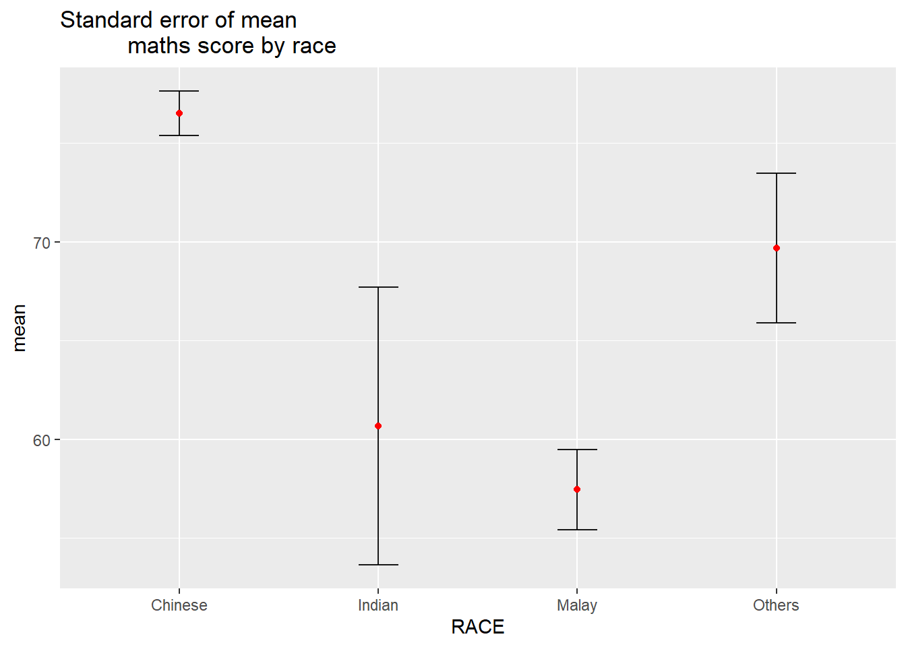
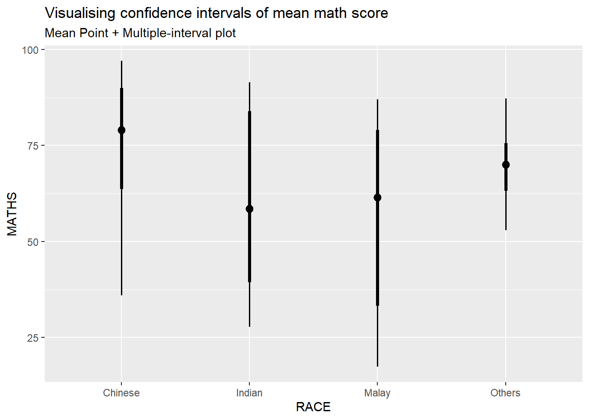
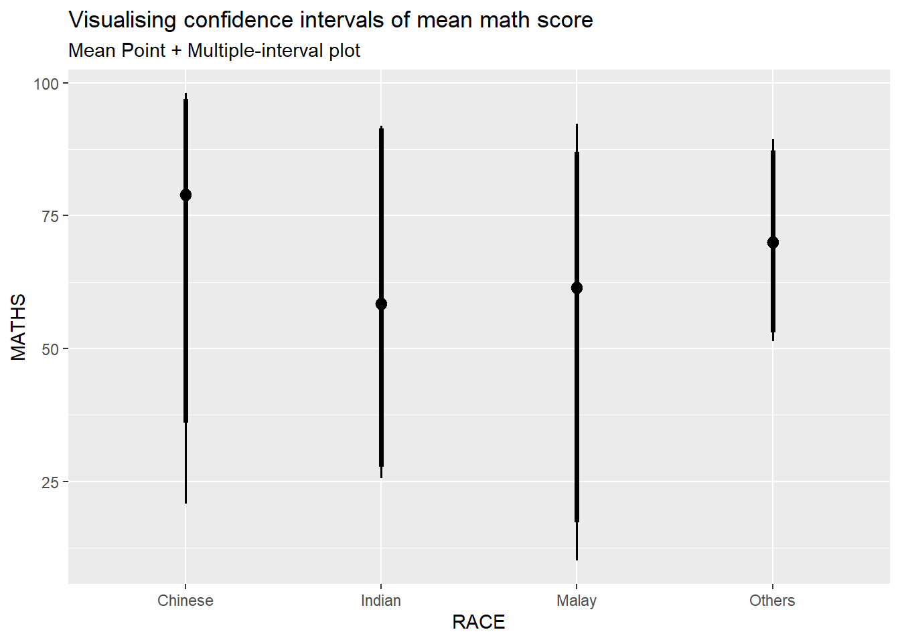

Rows: 322 Columns: 7
── Column specification ────────────────────────────────────────────────────────
Delimiter: ","
chr (4): ID, CLASS, GENDER, RACE
dbl (3): ENGLISH, MATHS, SCIENCE
ℹ Use `spec()` to retrieve the full column specification for this data.
ℹ Specify the column types or set `show_col_types = FALSE` to quiet this message.
Visualising uncertainty of point estimates
Using ggplot2. First, group observations and tabulate count, mean, standard deviation and standard error for each group.
# A tibble: 4 × 5
RACE n mean sd se
<chr> <int> <dbl> <dbl> <dbl>
1 Chinese 193 76.5 15.7 1.13
2 Indian 12 60.7 23.4 7.04
3 Malay 108 57.4 21.1 2.04
4 Others 9 69.7 10.7 3.79
Visualise as a table, using kable().
knitr::kable(head(my_sum), format ='html')
RACE
n
mean
sd
se
Chinese
193
76.50777
15.69040
1.132357
Indian
12
60.66667
23.35237
7.041005
Malay
108
57.44444
21.13478
2.043177
Others
9
69.66667
10.72381
3.791438
Visualising on a chart.
ggplot(my_sum) +geom_errorbar(aes(x=RACE, ymin=mean-se, ymax=mean+se), width=0.2, colour="black", alpha=0.9, size=0.5) +geom_point(aes (x=RACE, y=mean), stat="identity", color="red",size =1.5,alpha=1) +ggtitle("Standard error of mean maths score by race")
Warning: Using `size` aesthetic for lines was deprecated in ggplot2 3.4.0.
ℹ Please use `linewidth` instead.

# for 95% confidence interval, ordered by meantcrit <-qnorm(0.025)my_sum$tooltip <-c(paste0("Race = ", my_sum$RACE,"\n N = ", my_sum$n,"\n Avg. Scores = ", my_sum$mean,"\n 95% CI: [", my_sum$mean-(tcrit*my_sum$se), " , ", my_sum$mean+(tcrit*my_sum$se), "]"))p <-ggplot(my_sum) +geom_errorbar(aes(x =reorder(RACE, -mean), ymin = mean-(tcrit*se), ymax = mean+(tcrit*se)),width =0.2, colour ="black", alpha =0.9, size =0.5) +geom_point_interactive(aes(x =reorder(RACE, -mean), y = mean, tooltip = my_sum$tooltip), stat ="identity", colour ="red", size =1.5, alpha =1) +ggtitle("Standard error of mean maths score by race")girafe(ggobj = p,width_svg =8,height_svg =8*0.618)
Warning: Use of `my_sum$tooltip` is discouraged.
ℹ Use `tooltip` instead.
Using the ggdist package
Using stat_pointinterval() to build a visual for displaying distribution of maths scores by race.
exam_data %>%ggplot(aes(x = RACE,y = MATHS)) +stat_pointinterval() +labs(title ="Visualising confidence intervals of mean math score",subtitle ="Mean Point + Multiple-interval plot" )

Note: for the below, from prof’s slides, .point and .interval are ignored, replaced by point_interval per documentation however using point_interval = “median.qi” does not work. Resulting chart looks the same though.
exam_data %>%ggplot(aes(x = RACE, y = MATHS)) +stat_pointinterval(.width =0.95) +labs(title ="Visualising confidence intervals of mean math score",subtitle ="Mean Point + Multiple-interval plot")
Makeover the plot on previous slide by showing 95% and 99% confidence intervals.
exam_data %>%ggplot(aes(x = RACE, y = MATHS)) +stat_pointinterval(.width =c(0.95,0.99)) +labs(title ="Visualising confidence intervals of mean math score",subtitle ="Mean Point + Multiple-interval plot")

Using stat_gradientinterval() from ggdist package to build a visual displaying distribution of maths scores by race.
exam_data %>%ggplot(aes(x = RACE, y = MATHS)) +stat_gradientinterval( fill ="skyblue", show.legend =TRUE ) +labs(title ="Visualising confidence intervals of mean math score",subtitle ="Gradient + interval plot")
Warning: fill_type = "gradient" is not supported by the current graphics device.
- Falling back to fill_type = "segments".
- If you believe your current graphics device *does* support
fill_type = "gradient" but auto-detection failed, set that option
explicitly and consider reporting a bug.
- See help("geom_slabinterval") for more information.
Visualising uncertainty with HOPs
(Hypothetical Outcome Plots)
Not able to run the code and including it prevents successful rendering of website.